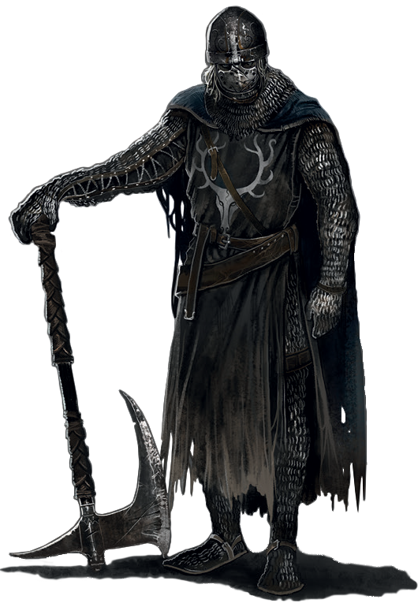

No começo não havia nada. O mundo era cinza e sem vida, e apenas uma névoa densa corria pela imensidão vazia. Os dragões imortais habitavam esse mundo cinza, e como não podiam morrer, não podiam ser considerados formas de vida. Eles eram tão constantes quanto todo o resto do mundo.
Um dia, a Primeira Chama apareceu nas profundezas e trouxe a luz e a vida. Talvez ainda mais importante, ela trouxe a disparidade. Junto com luz e vida, também chegaram as trevas e a morte. O mundo não era mais vazio e constante.
Quando a Primeira Chama se formou, as criaturas próximas a ela se levantaram para investigar. Esses seres eram os gigantes. A chama tinha muito poder concentrado, e os gigantes foram procurar por isso. Desse fogo, três gigantes saíram com almas poderosas.
Os gigantes se viram poderosos e decidiram que deviam dominar o mundo, e começaram a guerra contra os dragões imortais da superfície. Gwyn usou exércitos para enfrentar os dragões, Nito espalhou doenças pelo mundo, e a bruxa fez chover fogo nos campos de batalha. Aquela luta jamais teria um fim, se não fosse o papel decisivo de um traidor: Seath, o dragão sem escamas, o único de sua raça que não era imortal. Tomado pela inveja de seus iguais, Seath aceitou a oferta de Gwyn para se juntar ao seu lado e revelou que o segredo da imortalidade dos dragões eram suas escamas, e entregou que apenas o novo poder da eletricidade podia destruí-las. Gwyn prometeu uma parte de sua alma, uma posição de destaque em seu reino e um lugar para que Seath pudesse pesquisar e construir sua própria imortalidade de outra maneira. E assim os gigantes venceram, e a Era do Fogo teve seu início.
